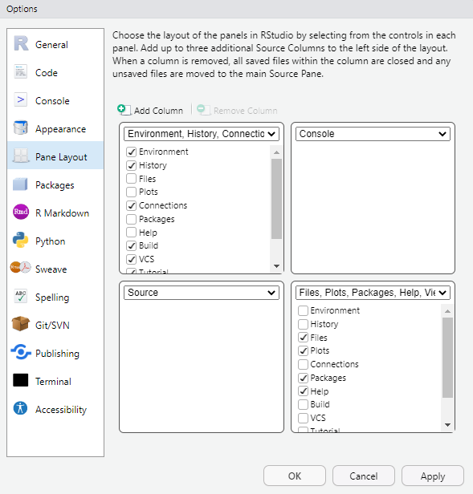
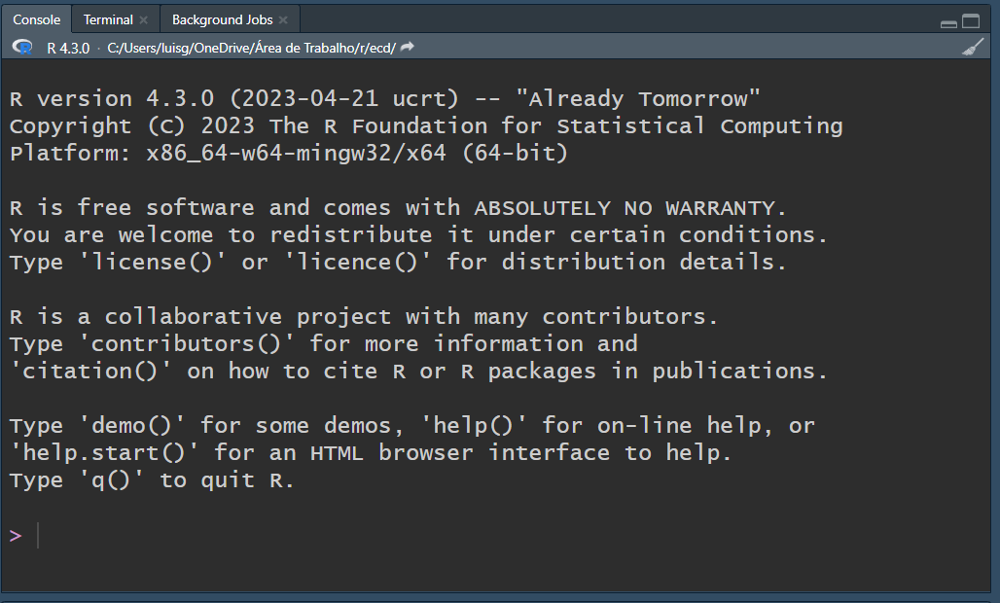
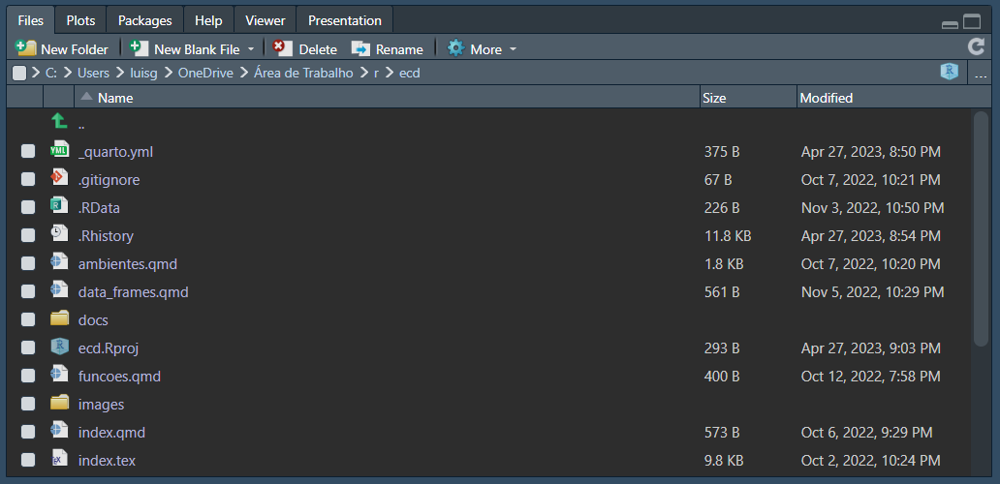
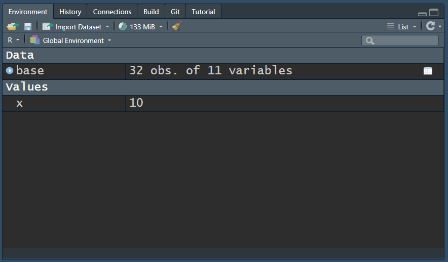
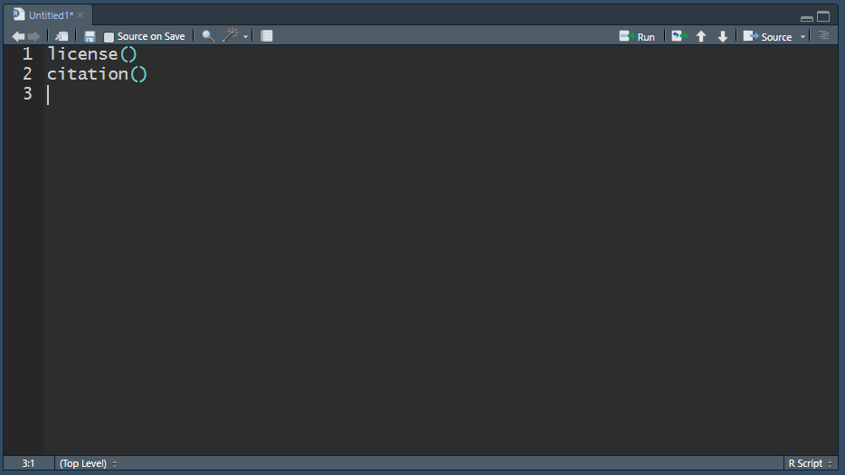

18 Introdução ao RStudio
18.1 Layout
Status 🟨🟨🟨
O RStudio possui basicamente 4 painéis dimensionáveis e cada um deles painéis pode trazer uma série de abas. Você pode configurar a localização de cada painel conforme sua preferência nos menus: View > Panes > Pane Layout ou em Tools > Global Options > Pane Layout.
Dentro dos painéis Environment e Files podem ser adicionadas ou removidas diversas abas (basta marcar/desmarcar checkbox). Muitas delas ficam ocultas e são “chamadas” pelo RStudio apenas quando necessárias.
18.2 Console
Neste painel está embutido o R propriamente dito.

18.3 Output
Painel com diversas saídas fornecidas. Gráficos (Plots), Estrutura de Pastas(Files), Ajuda (Help), Pacotes(Packages), etc aparecem neste painel. Este é um painel muito útil para navegação nos arquivos do projeto e visualização/exportação de gráficos.

18.4 Environment
Apresenta os objetos criados no ambiente do R.

18.5 Source
Aqui são abertos os arquivos de códigos (scripts, Rmarkdown, Quarto, SQL, etc).

Última atualização: 11/10/2024 - 21:50:26